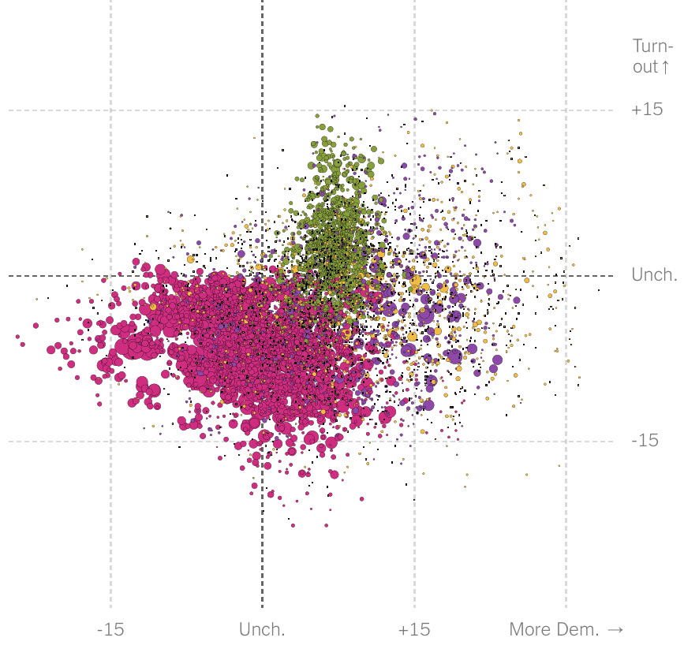

Designers: Abraham Corea Diaz & Giselle Bourelly
The example of data visualizaton I chose was called "The Voting Habits of Americans Like You" by the New York Times. This visualization showed the breakdown of percentages of voters based on different demographic identifiers, such as race, gender, education level, state, and age. It did a great job making the ata visually appealing by representing groups of people with different colorful dots on a graph of percent Democratic and percent voter turnout. Size of the dots represented the size of a certain group, and each race was represented by a different color. This created a simple way to view complex and large amounts fo data in a visually appealing and colorful way. As more and more identifiers were added to the graph, it became easier and easier to see general trends in the data because you could see big groups of a certain color in a certain section of the graph, which would tell you something about the way a certain population voted.
The Voting Habits of Americans Like You
On Campus DATA:
1. Items in the Lost and Found over the school year. When are people most forgetful?
2. Weight of my backpack and my friends’ backpacks over time.
3. Most popular bathroom on campus to use.
4. Noise levels in each room during school day.
5. Temperature in each room during the school day. Does it get hotter/colder based on outside temperatures? Is there a connection?
Off Campus DATA:
1. Which room in my house do I/my family members use the most?
2. Computer screen time for me/my family/friends.
3. Wind, temp, moisture levels outside my house. Search for correlation?
4. Amount of water used at home and times when used.
5. Soil temperature/moisture over the course of the day.
My partner, Giselle, and I will test the noise levels a BART passenger is exposed to each time they ride, using a GPS sensor and a microphone.
Data Visualization Idea:
So far, we have hooked up the GPS, microphone, and SD card to an Arduino Pro Mini microcontroller and a battery, all of which we are now storing in a nice red box - better than a cut-open empty Kleenex box. We have conducted trials both at school and in BART, but we have been having trouble getting a "fix" on the GPS on BART. A possible solution may be to try to get a fix outside of the BART station and then connect the SD card on the train so that only BART sound data is recorded.
UPDATE: Our proposed solution worked! We are now collecting data on our daily BART rides to and from school, as shown in the image above. However, due to some sections of the BART route being underground, we are unable to collect GPS data for a part of the trip.
canvas error - screenshot placeholder
Our data visualization shows different levels of noise recorded between BART stations, indicated by the height of the lines in between the stations on the graph. The color and volt setting offers some additional information, indicating the noise levels with different colors and displaying an average recorded volt measurement for each section of the tracks.
Class Reflection Questions:
1. Explain your data collection and visualization theme.
Our theme was collecting data about the noise levels in between different BART station on our routes to and from school.
2. What is the story you interpret and/or what did you learn from your data collection and visualization?
From our data, we learned that sections of the BART track that are in tunnels or underground were the loudest. From the process of collecting data, we learned how to problem solve for losing GPS signal underground.
3. Is your visualization complete? Anything you want to change or improve?
The visualization is now complete. We would have liked to conduct more data collection from MacArthur to Balboa because we lost data from a device malfunction. There is also always room for improvement with the aesthetic and ease of understanding.
4. What part of this project are you confident about?
The data that Abraham was actually able to collect in between Balboa and Millbrae was reinforced by many different trials. So that part of the data should be solid.